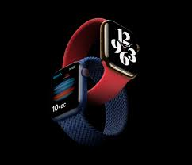
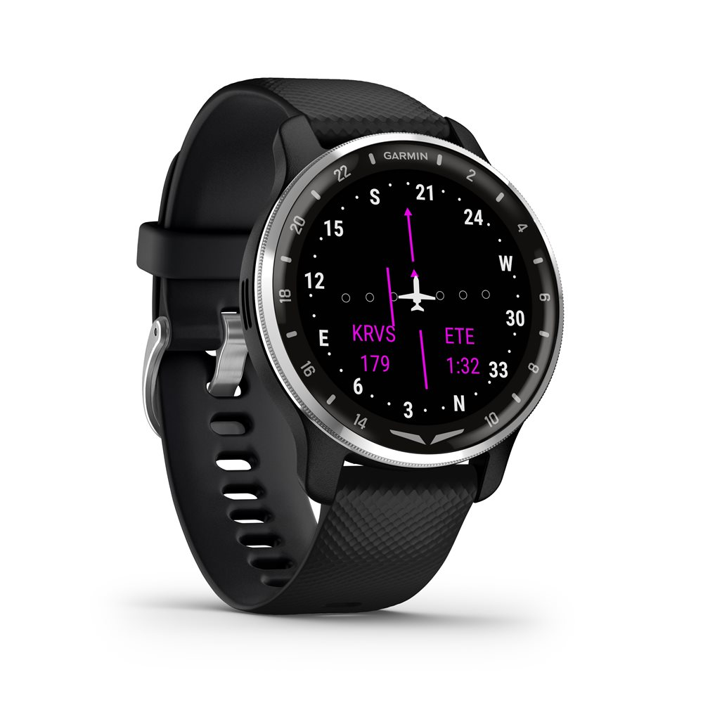
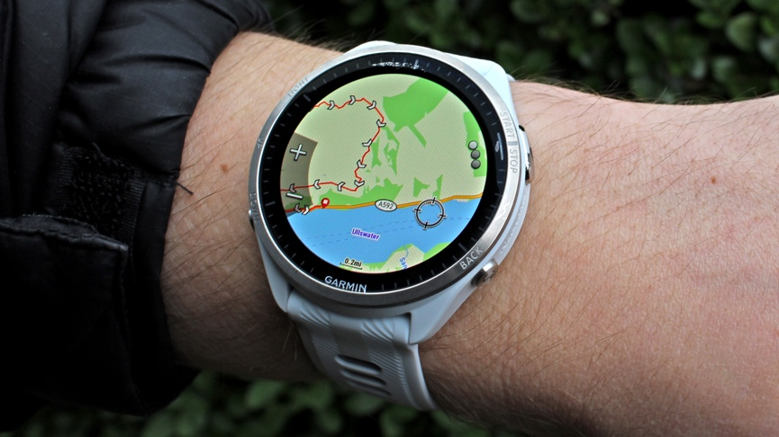
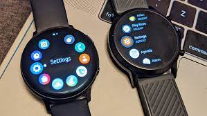

A smartwatch is a wearable computer in the form of a watch; modern smartwatches provide a local touchscreen interface for daily use.
What features do smartwatches offer?
There are a number of general-purpose smartwatches on the market that provide a collection of features. However, we introduce the most modern and high-quality products.
- Health informatics, such as heart rate, blood oxygen level, blood pressure and temperature monitoring
- Contactless payment and digital wallet applications
- Messaging and calling features, similar to those on a smartphone
- Emergency calls for assistance if the watch detects the wearer has fallen
- Social media and other notifications from synchronized smartphone applications
- Games, music, photos and other entertainment options
- Location features, such as maps, a compass and an altimeter
- GPS tracking
Types of smartwatches
- Apple Watch.
- Tizen watches.
- Hiking and climbing.
- Diving.
- Aviation.
- Visual assistance.
Why to choose smartwatches?
- It's more than just showing the time
- A true travel buddy
- Can find out your phone or device even easier
- A good fitness tracker
- Take calls and reply to messages instantly
- Social media notifications
- Connect with your phone longer
- Customization
- Complete Entertainment
- Security
Customer Reviews
"smartwatche has become an integral part of my daily routine. It's like having a personal assistant right on my wrist!" - Livi L.
"The fitness tracking features have motivated me to be more active and lead a healthier lifestyle." - Rohan S.